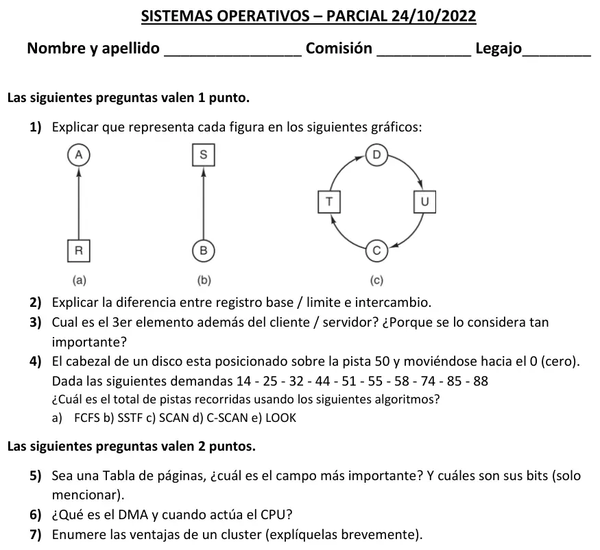

Parcial, 24/10/2022
Parcial, 24/10/2022
Enunciado


Preguntas con opciones
Salen de este examen, adaptadas. Dejalas para el final, porque las opciones pueden dar pistas.
- 1
¿Cuál es el campo más importante de una entrada de la tabla de páginas?
Se tomó: Parcial 24/10/22, adaptada
El número de marco de página es el que permite armar la dirección física. Los bits son datos de control.
- 2
¿Cuándo participa la CPU en una transferencia con DMA?
Se tomó: Parcial 24/10/22, adaptada
La CPU arma el pedido al principio y atiende la interrupción al final. En el medio, el módulo de DMA transfiere sin pasar por ella.
Propuesta de respuesta
Respuesta no verificada. La propuso Luta Studios con inteligencia artificial y ningún docente la revisó. Puede tener errores.
1. Es la notación del grafo de recursos. El círculo es un proceso y el cuadrado, un recurso.
- (a) Un arco del recurso R al proceso A. A posee el recurso R.
- (b) Un arco del proceso B al recurso S. B espera el recurso S, lo pidió y está bloqueado hasta tenerlo.
- (c) Un interbloqueo. D tiene T y espera U. C tiene U y espera T. Se forma el ciclo D, U, C, T, y ninguno de los dos va a soltar lo que tiene porque espera lo del otro.
2. Los registros base y límite son la forma más simple de darle a cada proceso su espacio de direcciones, con protección y reubicación. La base tiene la dirección física donde empieza el programa y el límite, su longitud. El proceso está entero en memoria y solo accede a su parte.
El intercambio (swapping) resuelve otra cosa, que no entren todos los procesos a la vez. Lleva cada proceso completo a memoria, lo ejecuta un tiempo y lo vuelve a mandar al disco. Cuando quedan muchos huecos se pueden juntar con la compactación.
La diferencia es que base y límite separan a los procesos que están en memoria, y el intercambio decide cuáles están en memoria y cuáles en el disco.
3. El tercer elemento es el middleware. El middleware es el conjunto de interfaces de programación (API) y protocolos estándares entre la aplicación, el software de comunicaciones y el SO. Permite que una aplicación o usuario del cliente acceda a una variedad de servicios del servidor, sin preocuparse por las diferencias entre ellos, y que las aplicaciones se vean igual en todas las plataformas. Es tan importante porque sin él cada aplicación tendría que adaptarse a cada servidor, SO y red. Con el middleware el cliente pide un servicio de la misma forma, sea cual sea el servidor que lo dé.
4. La cabeza está en la 50 y va hacia el 0. La cola es 14, 25, 32, 44, 51, 55, 58, 74, 85 y 88.
a) FCFS. Por orden de llegada.
| De | A | Pistas |
|---|---|---|
| 50 | 14 | 36 |
| 14 | 25 | 11 |
| 25 | 32 | 7 |
| 32 | 44 | 12 |
| 44 | 51 | 7 |
| 51 | 55 | 4 |
| 55 | 58 | 3 |
| 58 | 74 | 16 |
| 74 | 85 | 11 |
| 85 | 88 | 3 |
| Total | 110 |
b) SSTF. Siempre la más cercana. Desde 58, la 44 está a 14 y la 74 a 16, así que baja.
| De | A | Pistas |
|---|---|---|
| 50 | 51 | 1 |
| 51 | 55 | 4 |
| 55 | 58 | 3 |
| 58 | 44 | 14 |
| 44 | 32 | 12 |
| 32 | 25 | 7 |
| 25 | 14 | 11 |
| 14 | 74 | 60 |
| 74 | 85 | 11 |
| 85 | 88 | 3 |
| Total | 126 |
c) SCAN. Baja atendiendo hasta el extremo 0, invierte y sube hasta la última solicitud.
| De | A | Pistas |
|---|---|---|
| 50 | 44, 32, 25, 14 | 36 |
| 14 | 0 | 14 |
| 0 | 51, 55, 58, 74, 85, 88 | 88 |
| Total | 138 |
d) C-SCAN. Baja atendiendo hasta el 0, vuelve al otro extremo sin atender y sigue bajando. El enunciado no dice cuántas pistas tiene el disco. Con pistas de 0 a 99, queda así.
| De | A | Pistas |
|---|---|---|
| 50 | 44, 32, 25, 14 | 36 |
| 14 | 0 | 14 |
| 0 | 99 | regreso, no se cuenta |
| 99 | 88, 85, 74, 58, 55, 51 | 48 |
| Total | 98 |
Si tu comisión cuenta el regreso, se suman 99 y el total es 197. Con un disco de 0 a 199, como el ejemplo de teoría 9, da 198 sin el regreso y 397 con él.
e) LOOK. Como SCAN, pero baja solo hasta la 14, la última solicitud en esa dirección.
| De | A | Pistas |
|---|---|---|
| 50 | 44, 32, 25, 14 | 36 |
| 14 | 51, 55, 58, 74, 85, 88 | 74 |
| Total | 110 |
| Algoritmo | Pistas recorridas |
|---|---|
| FCFS | 110 |
| SSTF | 126 |
| SCAN | 138 |
| C-SCAN | 98 sin el regreso, 197 con él (disco de 0 a 99) |
| LOOK | 110 |
FCFS da igual que LOOK porque la cola ya está ordenada. Ir a la 14 y después subir es el mismo camino que hace LOOK.
5. El campo más importante es el número de marco de página. Los bits son el de presente/ausente, los de protección, el de modificada, el de referenciada y el de caché deshabilitada.
6. El DMA (acceso directo a memoria) hace la transferencia de un bloque de datos entre memoria y dispositivo. Para leer o escribir un bloque, la CPU manda un mandato al módulo de DMA con cuatro datos.
- Si es lectura o escritura.
- La dirección del dispositivo de E/S.
- La dirección inicial de memoria.
- La cantidad de palabras.
Después la CPU sigue con otro trabajo. El módulo transfiere el bloque completo sin pasar por la CPU y, al terminar, manda una interrupción. La CPU está involucrada solo al principio y al final.
7. - Escalabilidad absoluta: se puede armar uno más potente que la mayor máquina.
- Escalabilidad incremental: se agregan sistemas de a poco, a medida que hace falta.
- Alta disponibilidad: cada nodo es una computadora completa, así que la falla de uno no hace perder el servicio.
- Relación precio/prestaciones: igual o mayor poder que una máquina grande, a menor costo.
Respuesta no verificada. Puede tener errores.
Se armó con Resumen de Parcial, secciones Modelado con grafos, Espacio de direcciones, base y límite, Intercambio, Middleware, Planificación del acceso a disco, Traducción de direcciones y tabla de páginas, DMA y Cluster.
Quedó en duda: El enunciado no dice cuántas pistas tiene el disco, y C-SCAN lo necesita; se tomó de 0 a 99. El regreso de C-SCAN no se cuenta, como en la tabla del resumen de la práctica, pero teoría 5a sí lo suma. Preguntá en tu comisión. SCAN llega al 0 en las dos lecturas del material, porque la cabeza ya va hacia el 0. SSTF no usa la dirección, salvo para desempatar, y acá no hay empates. Los recorridos se verificaron con una simulación.
¿Cómo te fue?
Marcá cada tema del examen. Las preguntas con opciones ya se corrigieron solas.
- MemoriaMemoria, en Parcial
- DiscoEstructura del disco, en Parcial
- DMADMA, en Parcial
- ClusterCluster, en Parcial